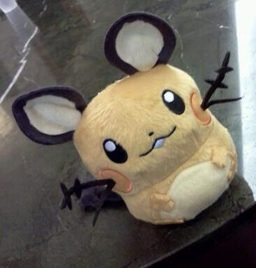

Benjamín Ignacio Valenzuela Muñoz · Desarrollador de software

PerfilBenjamín ValenzuelaLV. 20
Edad20 años20
UbicaciónSan Carlos, Región de ÑubleCL
FormaciónIngeniería Civil en InformáticaUBB
UniversidadUBB · Campus Fernando May, ChillánFM
ExperienciaAyudante de Álgebra Lineal · Staff de evento02
// profile.log
Me interesa el desarrollo móvil, las herramientas que resuelven problemas concretos y el ecosistema Linux.
Me gusta aprender construyendo: probar, equivocarme, iterar y dejar algo que se sienta útil y cuidado. He sido ayudante de Álgebra Lineal y staff en un evento universitario, experiencias que me enseñaron a explicar, organizar y aprender en equipo.